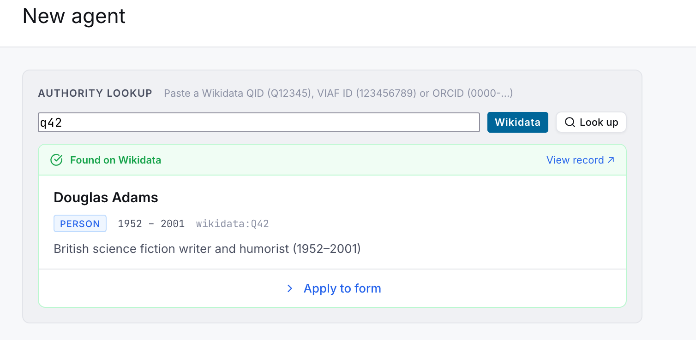
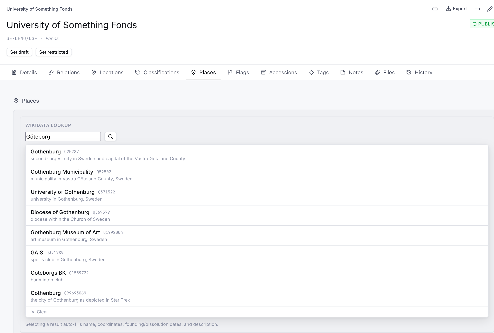
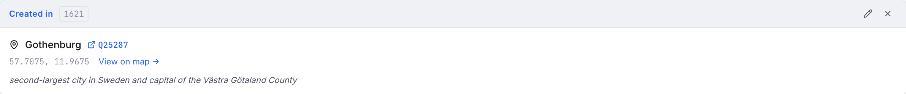
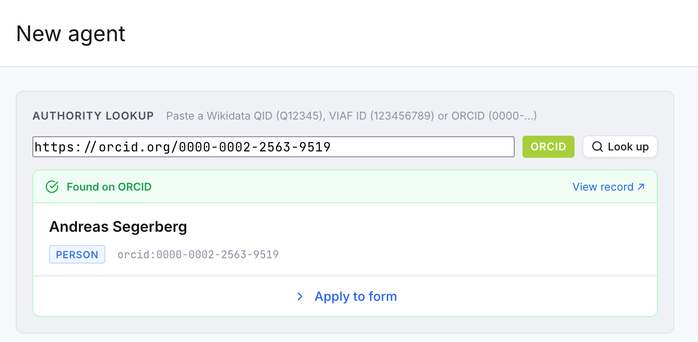
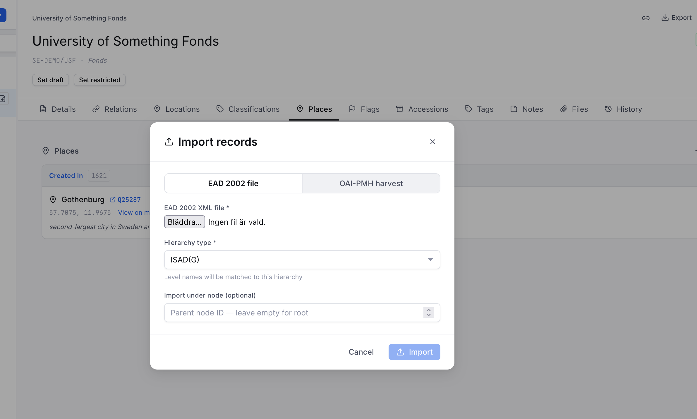
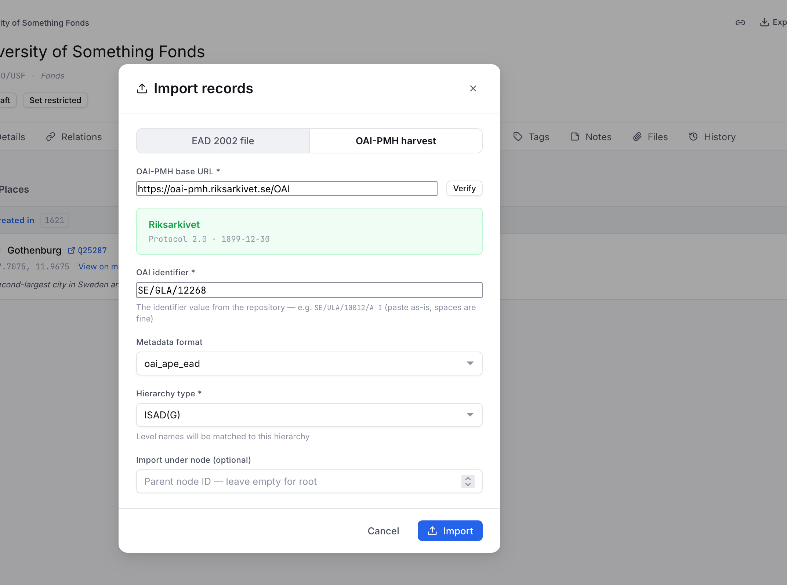
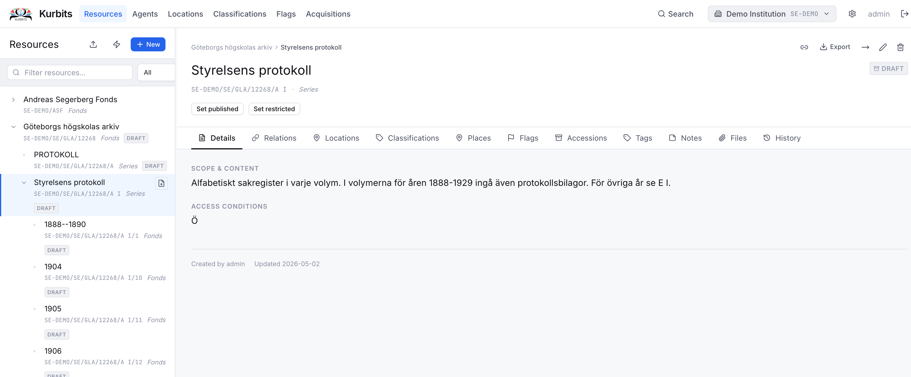
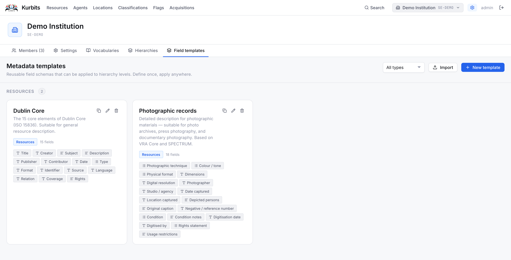

Authority lookups, import and export
Authority lookups
Kurbits integrates with several external authority systems to help you identify and enrich agent and place records without manual data entry.
Wikidata
Wikidata is a free, collaborative knowledge base maintained by the Wikimedia Foundation. Kurbits uses it in two places.
Agent identifiers — When editing an agent, you can paste a Wikidata QID (e.g. Q42) or a full Wikidata URL into the Wikidata identifier field. Kurbits will look up the entity and fill in:

- Authorised form of name
- Dates of existence
- Description / biographical note
- VIAF identifier (if present on the Wikidata record)
Places — On the Places tab of any resource or agent, the Wikidata search widget lets you search for geographic places by name. Selecting a result fills in:
- Place name
- Wikidata identifier
- Coordinates (latitude and longitude, from P625)
- Inception date (P571) → date from
- Dissolved / abolished date (P576) → date to
- Description → note


This is particularly useful for historical places — parishes, municipalities, estates — that have Wikidata entries with well-maintained coordinates and dates.
VIAF (Virtual International Authority File)
VIAF is a joint project of national libraries worldwide that aggregates authority records across many library systems. When you paste a VIAF identifier or URL into the VIAF field on an agent record, Kurbits retrieves:
- Authorised form of name (preferred heading from VIAF)
- Source authority links (Library of Congress, Biblioteka Narodowa, etc.)
VIAF is especially useful for well-known authors, historical figures, and corporate bodies that have been catalogued by major libraries.
ORCID
ORCID is a persistent identifier system for researchers and academics. When you paste an ORCID iD (format 0000-0002-1825-0097) or ORCID URL into the identifier field on a person record, Kurbits validates and normalises the identifier.
ORCID integration is primarily useful for collections with contemporary academic or scientific material where creators have registered ORCIDs.

How identifier lookup works
On an agent's Details tab, the identifier fields (Wikidata, VIAF, ORCID) each have a lookup button. Paste or type the identifier and click the button — Kurbits calls the external API and pre-fills whatever fields it can retrieve. You can always edit the result before saving.
If a field is already filled, the lookup will offer to overwrite it. No changes are saved until you click Save.
Import
EAD import (resources)
Kurbits can import archival descriptions in EAD 2002 (Encoded Archival Description) format. This is the standard XML format used by most archival management systems for exchange.
To import:
- Open the Resources page
- Click the Import button in the toolbar
- Choose EAD file and upload your
.xmlfile - Review the preview and confirm

Imported records are created as new nodes. If a record with the same reference code already exists, it will be updated. Notes, agents, dates, levels of description, and scope notes are all mapped from the EAD elements.
OAI-PMH harvest (resources)
Kurbits can harvest records from any OAI-PMH compliant repository — other archival systems, library catalogues, or aggregators.
To harvest:
- Open the Resources page and click Import
- Choose OAI-PMH
- Enter the base URL of the OAI-PMH endpoint (e.g.
https://oai-pmh.riksarkivet.se/OAI) for Swedish national Archives - Click Identify to verify the endpoint and see available metadata formats
- Choose a format and set any date filters
- Click Harvest

Harvested records are created or updated based on their OAI identifier. Large harvests may take some time.

EAC-CPF import (agents)
Agent authority records can be imported from EAC-CPF (Encoded Archival Context — Corporate Bodies, Persons, and Families) XML files. This is the standard format for exchanging authority records between archival systems.
To import:
- Open the Agents page
- Click Import EAC-CPF
- Upload your
.xmlfile - Choose whether to update existing records (matched by name) or only create new ones
- Confirm
Visual Arkiv import (CLI)
See the separate guide: Visual Arkiv import (Swedish).
Metadata template import
Standard metadata templates (Dublin Core, Dublin Core Terms, Photographic records) can be imported from the Administration panel. See Administration → Field templates.

Export
EAD export (resources)
Any resource can be exported as an EAD 2002 XML file. The export includes the selected node and optionally all its descendants.
To export:
- Select a node in the Resources tree
- Click the Export button in the toolbar
- Choose Full export (node + all descendants) or Single record (this node only)
- The file downloads immediately
The exported EAD file follows the EAD 2002 standard and can be imported into other archival management systems that support EAD.
Other export formats
Depending on your institution's configuration, additional export formats may be available — for example Dublin Core XML or RDF. These appear in the export dropdown alongside EAD.